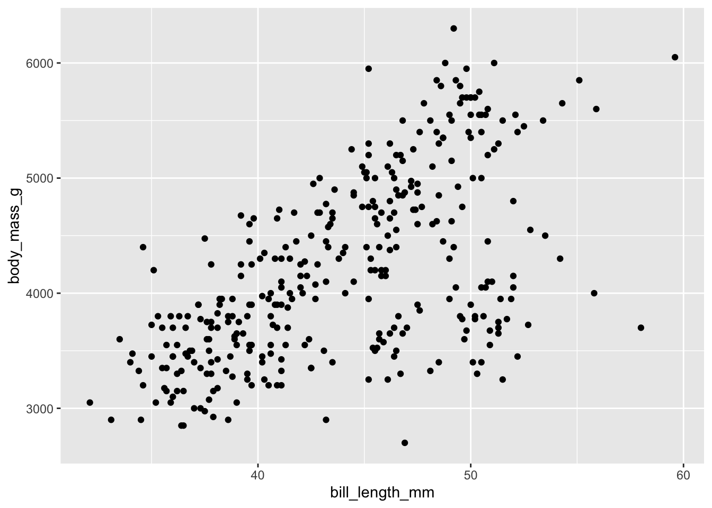
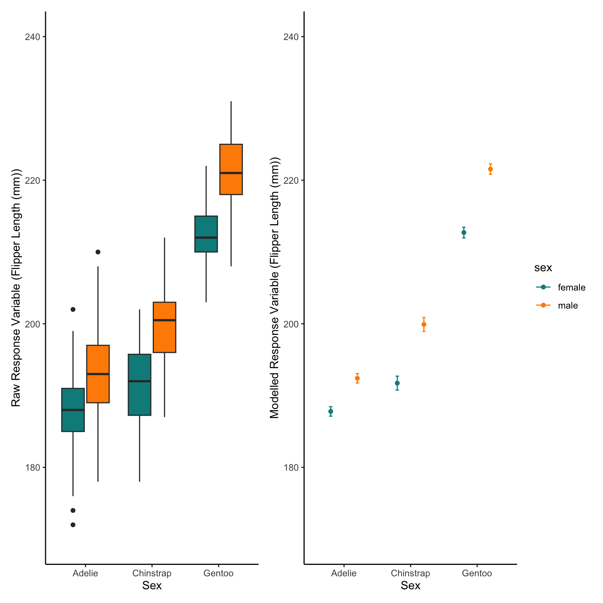

#install.packages("palmerpenguins")
library(palmerpenguins)
data(penguins)Modelling in R
Packages often have their own example datasets within them, or a package can be used to store just data without functions etc.
We will look at the palmer penguins dataset
Real World Data
This becomes a ‘promise’ of a data set, we have to do something with it to get it properly, lets take a look inside
library(dplyr)
Attaching package: 'dplyr'The following objects are masked from 'package:stats':
filter, lagThe following objects are masked from 'package:base':
intersect, setdiff, setequal, unionglimpse(penguins)Rows: 344
Columns: 8
$ species <fct> Adelie, Adelie, Adelie, Adelie, Adelie, Adelie, Adel…
$ island <fct> Torgersen, Torgersen, Torgersen, Torgersen, Torgerse…
$ bill_length_mm <dbl> 39.1, 39.5, 40.3, NA, 36.7, 39.3, 38.9, 39.2, 34.1, …
$ bill_depth_mm <dbl> 18.7, 17.4, 18.0, NA, 19.3, 20.6, 17.8, 19.6, 18.1, …
$ flipper_length_mm <int> 181, 186, 195, NA, 193, 190, 181, 195, 193, 190, 186…
$ body_mass_g <int> 3750, 3800, 3250, NA, 3450, 3650, 3625, 4675, 3475, …
$ sex <fct> male, female, female, NA, female, male, female, male…
$ year <int> 2007, 2007, 2007, 2007, 2007, 2007, 2007, 2007, 2007…This gives us two datasets in our global environment
Lets plot some of the data to see how they are related before we use more formal analyses
plot(penguins)
The base plot() function will create a grid that is each column of the data set is plotted against all the others, this is fine for continuous data (Such as bill_depth_mm)
but it isn’t great for the categorical data (what does species= 1 mean??)
lets use ggplot2 again to make some nicer plots
ggplot starts with an empty ggplot() call that creates a blank sheet and we then layer on our information using the + symbol
library(ggplot2)
ggplot(data=penguins)+
geom_point(aes(x=bill_length_mm,y=body_mass_g))Warning: Removed 2 rows containing missing values (`geom_point()`).
This creates a simple scatter plot (note the error about missing values, these are NA values and we will deal with this later)
We can maybe try colour our points based on their sex or species or island
ggplot(data=penguins)+
geom_point(aes(x=bill_length_mm,y=body_mass_g, colour=sex))Warning: Removed 2 rows containing missing values (`geom_point()`).
Some of these points do seem to be in clusters, maybe there are differences between species
ggplot(data=penguins)+
geom_point(aes(x=bill_length_mm,y=body_mass_g, colour=sex, shape=species))Warning: Removed 2 rows containing missing values (`geom_point()`).
this is a bit clearer, but maybe we want to show each species as a separate panel (or sometimes called facet)
ggplot(data=penguins)+
geom_point(aes(x=bill_length_mm,y=body_mass_g, colour=sex, shape=species))+
facet_wrap(~species)Warning: Removed 2 rows containing missing values (`geom_point()`).We can even split further into a grid of species and islands
ggplot(data=penguins)+
geom_point(aes(x=bill_length_mm,y=body_mass_g, colour=sex, shape=species))+
facet_grid(island~species)Warning: Removed 2 rows containing missing values (`geom_point()`).lets look at some of the other data in the dataset
ggplot(data=penguins)+
geom_point(aes(x=species,y=flipper_length_mm, colour=sex))Warning: Removed 2 rows containing missing values (`geom_point()`).seems like a scatter plot isnt the best type of plot when one of our axes is categorical,
lets try a boxplot
ggplot(data=penguins)+
geom_boxplot(aes(x=species,y=flipper_length_mm, colour=sex))Warning: Removed 2 rows containing non-finite values (`stat_boxplot()`).We can see from this plot that there are clear differences by species and by sex of flipper length,
lets model that difference and see if the difference is significant,
As we are going to make simple models here we will clean the data to make our lives easier, this will mean removing NA values. Removing NA’s would normally be something I would not recommend, we (or someone) has worked extremely hard to create this data, so we shouldn’t ever remove data, but NA replacement is complicated and not the subject for now.
Using summary() we can see which columns have NAs and which don’t.
summary(penguins) species island bill_length_mm bill_depth_mm
Adelie :152 Biscoe :168 Min. :32.10 Min. :13.10
Chinstrap: 68 Dream :124 1st Qu.:39.23 1st Qu.:15.60
Gentoo :124 Torgersen: 52 Median :44.45 Median :17.30
Mean :43.92 Mean :17.15
3rd Qu.:48.50 3rd Qu.:18.70
Max. :59.60 Max. :21.50
NA's :2 NA's :2
flipper_length_mm body_mass_g sex year
Min. :172.0 Min. :2700 female:165 Min. :2007
1st Qu.:190.0 1st Qu.:3550 male :168 1st Qu.:2007
Median :197.0 Median :4050 NA's : 11 Median :2008
Mean :200.9 Mean :4202 Mean :2008
3rd Qu.:213.0 3rd Qu.:4750 3rd Qu.:2009
Max. :231.0 Max. :6300 Max. :2009
NA's :2 NA's :2 Through going into the object and ordering one of the columns we find that the NA’s (which order to last always) are the same rows So we only have to remove two rows to remove the NAs in the biometrics columns, there are more NA’s in the sex column if we want to remove NA’s there are many ways, to be selective we can filter our dataset
To subset data we can use the filter() function from the dplyr package, we create a logic clause that then filters the dataset by that clause/statement,
for example if we want to select all rows of the data set where the data is from a female penguin we can do this by
female_penguins<- penguins %>%
filter(sex=="female")
female_penguins# A tibble: 165 × 8
species island bill_length_mm bill_depth_mm flipper_length_mm body_mass_g
<fct> <fct> <dbl> <dbl> <int> <int>
1 Adelie Torgersen 39.5 17.4 186 3800
2 Adelie Torgersen 40.3 18 195 3250
3 Adelie Torgersen 36.7 19.3 193 3450
4 Adelie Torgersen 38.9 17.8 181 3625
5 Adelie Torgersen 41.1 17.6 182 3200
6 Adelie Torgersen 36.6 17.8 185 3700
7 Adelie Torgersen 38.7 19 195 3450
8 Adelie Torgersen 34.4 18.4 184 3325
9 Adelie Biscoe 37.8 18.3 174 3400
10 Adelie Biscoe 35.9 19.2 189 3800
# ℹ 155 more rows
# ℹ 2 more variables: sex <fct>, year <int>or we might want all the penguins above 5 kg
chonky_penguins<- penguins %>%
filter(body_mass_g>= 5000)
chonky_penguins# A tibble: 67 × 8
species island bill_length_mm bill_depth_mm flipper_length_mm body_mass_g
<fct> <fct> <dbl> <dbl> <int> <int>
1 Gentoo Biscoe 50 16.3 230 5700
2 Gentoo Biscoe 50 15.2 218 5700
3 Gentoo Biscoe 47.6 14.5 215 5400
4 Gentoo Biscoe 46.7 15.3 219 5200
5 Gentoo Biscoe 46.8 15.4 215 5150
6 Gentoo Biscoe 49 16.1 216 5550
7 Gentoo Biscoe 48.4 14.6 213 5850
8 Gentoo Biscoe 49.3 15.7 217 5850
9 Gentoo Biscoe 49.2 15.2 221 6300
10 Gentoo Biscoe 48.7 15.1 222 5350
# ℹ 57 more rows
# ℹ 2 more variables: sex <fct>, year <int>there are a range of symbols we can use such as more than >, less than <, more than or equal to >=, less than or equal to <=, is equal to ==
we can even use multiple clauses or statements in one call to filter,
so if we want all the “chonky” female penguins
chonky_female_penguins<- penguins %>%
filter(body_mass_g>= 5000 & sex=="female")
chonky_female_penguins# A tibble: 8 × 8
species island bill_length_mm bill_depth_mm flipper_length_mm body_mass_g
<fct> <fct> <dbl> <dbl> <int> <int>
1 Gentoo Biscoe 45.1 14.5 215 5000
2 Gentoo Biscoe 42.9 13.1 215 5000
3 Gentoo Biscoe 45.1 14.5 207 5050
4 Gentoo Biscoe 49.1 14.8 220 5150
5 Gentoo Biscoe 44.9 13.3 213 5100
6 Gentoo Biscoe 46.5 14.8 217 5200
7 Gentoo Biscoe 50.5 15.2 216 5000
8 Gentoo Biscoe 45.2 14.8 212 5200
# ℹ 2 more variables: sex <fct>, year <int>sometimes we might want to filter with multiple answers of a categorical variable,
for example if we wanted all penguins from Biscoe and Torgersen island
to do this we can make a vector of the names we want, then filter by that vector
Islands_we_Want<-c("Biscoe","Torgersen")
Biscoe_Torgersen_penguins<- penguins %>%
filter(island%in%Islands_we_Want)
Biscoe_Torgersen_penguins# A tibble: 220 × 8
species island bill_length_mm bill_depth_mm flipper_length_mm body_mass_g
<fct> <fct> <dbl> <dbl> <int> <int>
1 Adelie Torgersen 39.1 18.7 181 3750
2 Adelie Torgersen 39.5 17.4 186 3800
3 Adelie Torgersen 40.3 18 195 3250
4 Adelie Torgersen NA NA NA NA
5 Adelie Torgersen 36.7 19.3 193 3450
6 Adelie Torgersen 39.3 20.6 190 3650
7 Adelie Torgersen 38.9 17.8 181 3625
8 Adelie Torgersen 39.2 19.6 195 4675
9 Adelie Torgersen 34.1 18.1 193 3475
10 Adelie Torgersen 42 20.2 190 4250
# ℹ 210 more rows
# ℹ 2 more variables: sex <fct>, year <int>Here we will make use of ! this means the opposite of the clause (not this)
We also use %in% which is used to tell filter there are more than one element
or NAs that we want to get rid of as NA is not classed like normal data
penguins_someNAs<-penguins %>%
filter(!body_mass_g%in%NA)If we now look at the number of rows of the datasets we can see only two rows were removed. (not all the NAs)
nrow(penguins)[1] 344nrow(penguins_someNAs)[1] 342summary(penguins_someNAs) species island bill_length_mm bill_depth_mm
Adelie :151 Biscoe :167 Min. :32.10 Min. :13.10
Chinstrap: 68 Dream :124 1st Qu.:39.23 1st Qu.:15.60
Gentoo :123 Torgersen: 51 Median :44.45 Median :17.30
Mean :43.92 Mean :17.15
3rd Qu.:48.50 3rd Qu.:18.70
Max. :59.60 Max. :21.50
flipper_length_mm body_mass_g sex year
Min. :172.0 Min. :2700 female:165 Min. :2007
1st Qu.:190.0 1st Qu.:3550 male :168 1st Qu.:2007
Median :197.0 Median :4050 NA's : 9 Median :2008
Mean :200.9 Mean :4202 Mean :2008
3rd Qu.:213.0 3rd Qu.:4750 3rd Qu.:2009
Max. :231.0 Max. :6300 Max. :2009 Still 9 NAs in sex
penguins_noNAs<-penguins_someNAs %>%
filter(!sex%in%NA)
summary(penguins_noNAs) species island bill_length_mm bill_depth_mm
Adelie :146 Biscoe :163 Min. :32.10 Min. :13.10
Chinstrap: 68 Dream :123 1st Qu.:39.50 1st Qu.:15.60
Gentoo :119 Torgersen: 47 Median :44.50 Median :17.30
Mean :43.99 Mean :17.16
3rd Qu.:48.60 3rd Qu.:18.70
Max. :59.60 Max. :21.50
flipper_length_mm body_mass_g sex year
Min. :172 Min. :2700 female:165 Min. :2007
1st Qu.:190 1st Qu.:3550 male :168 1st Qu.:2007
Median :197 Median :4050 Median :2008
Mean :201 Mean :4207 Mean :2008
3rd Qu.:213 3rd Qu.:4775 3rd Qu.:2009
Max. :231 Max. :6300 Max. :2009 All sorted
Modelling Categorical Factors
So now we will try prove the obvious Does the flipper length of penguins change between species and between sexes Whether we use an interaction or not depends on if our scientific thought believes the relationship of Species to flipper length is different between sexes (sexual dimorphism may not be consistent across species)
lm2.1<-lm(flipper_length_mm~species*sex,data=penguins_noNAs)We could apply a linear model to almost all data but often it will meet our assumptions
to assess these assumptions we can look at the residual distance between the model line and the points
these are called the residuals of the model
if we run this code we can see a line through points (raw data in grey) and the distances (residuals in red) from the line (model in blue).
n=50
a=2
b=2
xGaus=seq(1,100,length.out=n)
yGaus=a+b*xGaus
o=10
uGaus=rnorm(n,mean = yGaus,sd=o)
data.frame(y=yGaus,u=uGaus,x=xGaus) %>%
ggplot()+
geom_line(aes(x=x,y=y),linewidth=2,colour="darkcyan",alpha=0.7)+
geom_segment(aes(x=x,xend=x,y=y,yend=u),colour="red")+
geom_point(aes(x=x,y=u),size=2,colour="grey50")
We can now check visually the residuals from our model show no patterns
plot(lm2.1)


This is annoying as we have to press enter in the console to see all the plots
We will install some packages from the easystats ecosystem of packages for this. There are other packages we could also use for this (including one of my own) but performance is good
#install.packages("performance")
library(performance)
check_model(lm2.1)
As we only have factors in our model we don’t see a ‘cloud’ of points, but the line still is flat and horizontal so this is good
As the diagnostics are good we can look at the results
summary(lm2.1)
Call:
lm(formula = flipper_length_mm ~ species * sex, data = penguins_noNAs)
Residuals:
Min 1Q Median 3Q Max
-15.7945 -3.4110 0.0882 3.4590 17.5890
Coefficients:
Estimate Std. Error t value Pr(>|t|)
(Intercept) 187.7945 0.6619 283.721 < 2e-16 ***
speciesChinstrap 3.9408 1.1742 3.356 0.000884 ***
speciesGentoo 24.9124 0.9947 25.044 < 2e-16 ***
sexmale 4.6164 0.9361 4.932 1.3e-06 ***
speciesChinstrap:sexmale 3.5600 1.6606 2.144 0.032782 *
speciesGentoo:sexmale 4.2176 1.3971 3.019 0.002737 **
---
Signif. codes: 0 '***' 0.001 '**' 0.01 '*' 0.05 '.' 0.1 ' ' 1
Residual standard error: 5.655 on 327 degrees of freedom
Multiple R-squared: 0.8396, Adjusted R-squared: 0.8372
F-statistic: 342.4 on 5 and 327 DF, p-value: < 2.2e-16Okay there are a lot of numbers here but what does it actually mean
first lets plot the raw data, boxplots are probably the best for categorical factors
We can re-use some of our code from the intro for appearance and colours
ggplot(penguins_noNAs)+
geom_boxplot(aes(x=species,y=flipper_length_mm,fill=sex))+
scale_fill_manual(values=c("darkcyan","darkorange"))+
labs(x="Sex",y="Response Variable (Flipper Length (mm))")+
theme_classic()
Now we can also see what the model believes about our data
This should be similar to our raw data but not identical
to do this we make simulated raw data with this same predictor variables in
we then use the model to predict the response variable based on those predictor variables
Therefore, we make a data set with just sex and species (be careful of spelling and capitalisation, R wants it identical)
the model then predicts the average Flipper length in mm based on those species and sexes.
We can also tell the Predict function to predict error (Standard Error here)
NewData<-expand.grid(sex=c("male","female"),
species=c("Adelie","Chinstrap","Gentoo"))
Pred<-predict(lm2.1,NewData,se.fit=TRUE)
NewData$response<-Pred$fit
NewData$se.fit<-Pred$se.fit
ggplot(NewData)+
geom_point(aes(x=species,y=response,colour=sex),
position=position_dodge(0.8))+
geom_errorbar(aes(x=species,ymax=response+se.fit,
ymin=response-se.fit,colour=sex),
width=0.1,
position=position_dodge(0.8))+
scale_colour_manual(values=c("darkcyan","darkorange"))+
labs(x="Sex",y="Response Variable (Flipper Length (mm))")+
theme_classic()
Modelling Continuous Variables
Okay that is what we do with linear models of categorical factors
But what if we want to see the relationship between flipper_length_mm and bill_length_mm
But we know there are species differences and sexual differences in flipper length
As Males always tend to be larger lets just assess species differences in their flipper to bill relationship
Lets plot the raw data first
ggplot(penguins_noNAs)+
geom_point(aes(x=bill_length_mm,y=flipper_length_mm,colour=species))+
scale_colour_manual(values=c("darkcyan","darkorange","grey30"))+
labs(x="Bill Length (mm)",y="Flipper Length (mm)")+
theme_classic()We can see from the raw data that we will expect to find some strong linear relationships
lm3.1<-lm(flipper_length_mm~species*bill_length_mm,data=penguins_noNAs)
check_model(lm3.1)Model has interaction terms. VIFs might be inflated.
You may check multicollinearity among predictors of a model without
interaction terms.
summary(lm3.1)
Call:
lm(formula = flipper_length_mm ~ species * bill_length_mm, data = penguins_noNAs)
Residuals:
Min 1Q Median 3Q Max
-24.0561 -3.2927 -0.1646 3.5212 16.2890
Coefficients:
Estimate Std. Error t value Pr(>|t|)
(Intercept) 158.5047 7.0383 22.520 < 2e-16 ***
speciesChinstrap -11.8689 12.5448 -0.946 0.3448
speciesGentoo -8.2555 10.8008 -0.764 0.4452
bill_length_mm 0.8139 0.1809 4.500 9.46e-06 ***
speciesChinstrap:bill_length_mm 0.1934 0.2788 0.694 0.4884
speciesGentoo:bill_length_mm 0.5943 0.2495 2.382 0.0178 *
---
Signif. codes: 0 '***' 0.001 '**' 0.01 '*' 0.05 '.' 0.1 ' ' 1
Residual standard error: 5.799 on 327 degrees of freedom
Multiple R-squared: 0.8314, Adjusted R-squared: 0.8288
F-statistic: 322.5 on 5 and 327 DF, p-value: < 2.2e-16As we hypothesised before modelling that there would be different bill to flipper relationships between species The interaction model follows our scientific assumptions Therefore, it would be incorrect to use lower complexity models (without the interactoin for example)
To predict again we want to create lines for each species To do this we want to create fake bill length data over the same range for each species
Here we will use the seq() function that creates a sequence of values from your first number to your last number And you can chose the length of the vector it creates or the distance between each individual value
NewData_<-expand.grid(bill_length_mm=seq(from=min(penguins_noNAs$bill_length_mm),
to=max(penguins_noNAs$bill_length_mm),
length.out=1000),
species=c("Adelie","Chinstrap","Gentoo"))As the different species won’t be across all of these bill length ranges we should also remove values outside of each species range
Gentoo_Range<-penguins_noNAs %>%
filter(species=="Gentoo") %>%
summarise(min=min(bill_length_mm),
max=max(bill_length_mm))
Adelie_Range<-penguins_noNAs %>%
filter(species=="Adelie") %>%
summarise(min=min(bill_length_mm),
max=max(bill_length_mm))
Chinstrap_Range<-penguins_noNAs %>%
filter(species=="Chinstrap") %>%
summarise(min=min(bill_length_mm),
max=max(bill_length_mm))
NewData_2<-NewData_ %>%
mutate(Range=case_when(species=="Gentoo" &
bill_length_mm>=Gentoo_Range$min &
bill_length_mm<=Gentoo_Range$max~"Good",
species=="Adelie" &
bill_length_mm>=Adelie_Range$min &
bill_length_mm<=Adelie_Range$max~"Good",
species=="Chinstrap" &
bill_length_mm>=Chinstrap_Range$min &
bill_length_mm<=Chinstrap_Range$max~"Good"
)) %>%
filter(!Range%in%NA) %>%
select(-Range)As we didnt create a case when for outside of the good range then they will be NAs and we can filter them out Then we remove the created Range column
Pred_2<-predict(lm3.1,NewData_2,se.fit=TRUE)
NewData_2$response<-Pred_2$fit
NewData_2$se.fit<-Pred_2$se.fitSo now we have many data points that can be used to draw the linear model outputs
ggplot()+
geom_ribbon(data=NewData_2,mapping=aes(x=bill_length_mm,ymax=response+se.fit,
ymin=response-se.fit,fill=species),
alpha=0.4)+
geom_line(data=NewData_2,mapping=aes(x=bill_length_mm,y=response,colour=species),
alpha=0.4)+
scale_color_manual(values=c("darkcyan","darkorange","grey30"))+
scale_fill_manual(values=c("darkcyan","darkorange","grey30"))+
labs(x="Bill Length (mm)",y="Response Variable (Flipper Length (mm))")+
theme_classic()
This looks good but lets maybe add the raw data values onto the same figure as the model outputs
ggplot()+
geom_point(data=penguins_noNAs,mapping = aes(x=bill_length_mm,
y=flipper_length_mm,
colour=species),
alpha=0.4,size=0.8)+
geom_ribbon(data=NewData_2,mapping=aes(x=bill_length_mm,ymax=response+se.fit,
ymin=response-se.fit,fill=species),
alpha=0.4)+
geom_line(data=NewData_2,mapping=aes(x=bill_length_mm,y=response,colour=species),
alpha=0.4)+
scale_color_manual(values=c("darkcyan","darkorange","grey30"))+
scale_fill_manual(values=c("darkcyan","darkorange","grey30"))+
labs(x="Bill Length (mm)",y="Response Variable (Flipper Length (mm))")+
theme_classic()